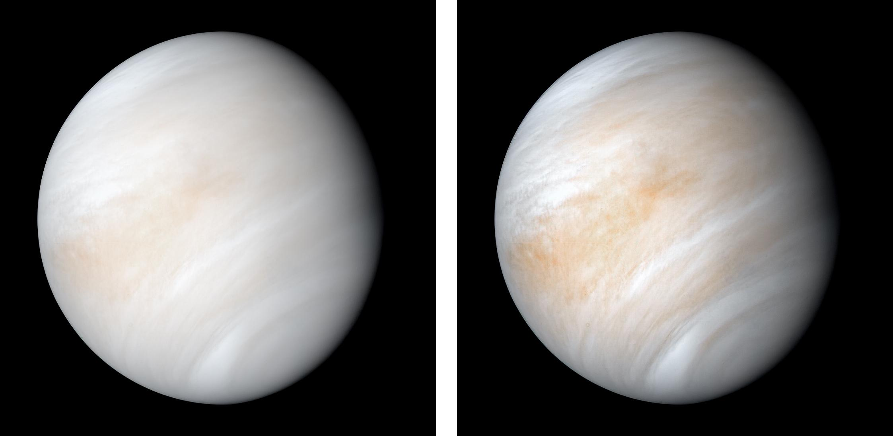
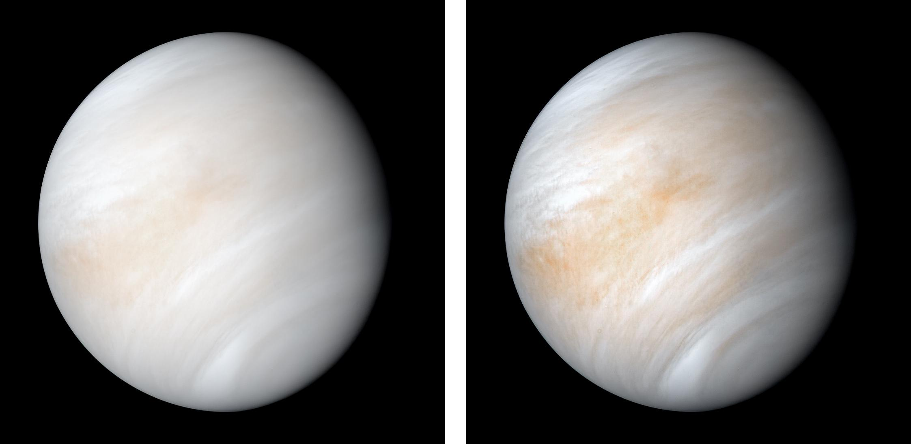
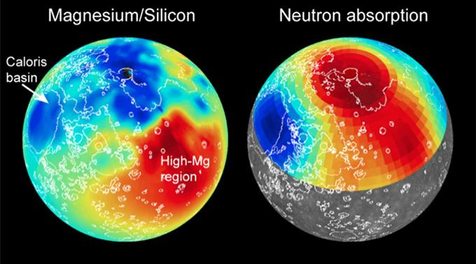
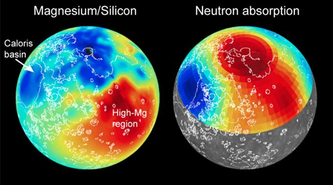
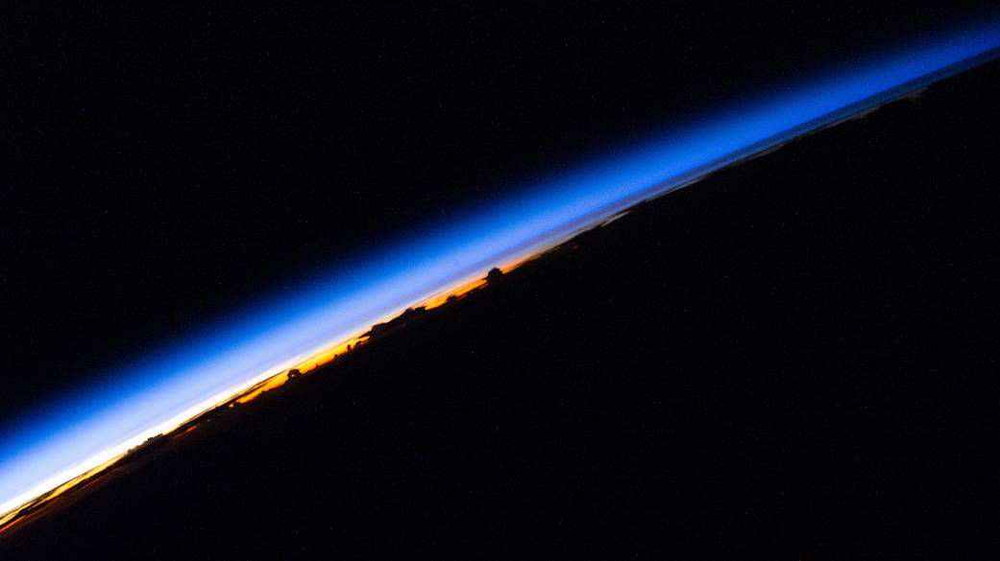
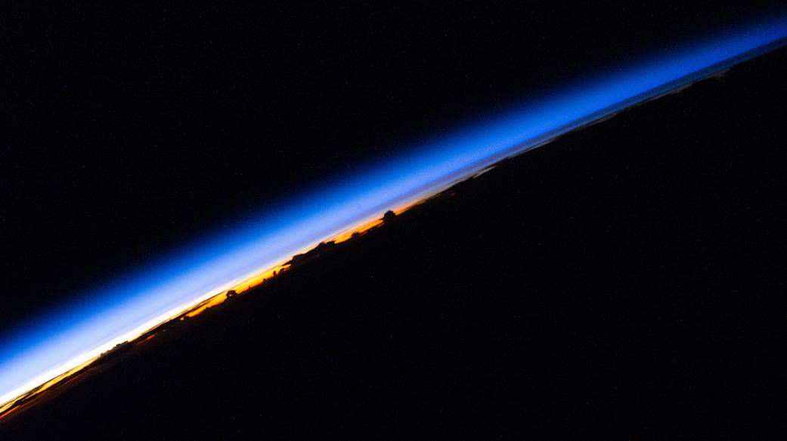

Wandering Beyond Blue Yonder

Terrestrial Planets


 

 

 



The hemispheric view of Venus, as revealed by more than a decade of radar investigations culminating in the 1990-1994 Magellan mission, is centered at 180 degrees east longitude. The Magellan spacecraft imaged more than 98 percent of Venus at a resolution of about 100 m; the effective resolution of this image is about 3 km
This picture of Venus was taken by the Galileo spacecrafts Solid State Imaging System on February 14, 1990, at a range of almost 1.7 million miles from the planet. A highpass spatial filter has been applied in order to emphasize the smaller scale cloud features, and the rendition has been colorized to a bluish hue in order to emphasize the subtle contrasts in the cloud markings and to indicate that it was taken through a violet filter.
Three planets and our moon put on a show for astronaut Scott Kelly, who spent a year aboard the International Space Station to conduct research of long-duration space flight.
As it sped away from Venus, NASA's Mariner 10 spacecraft captured this seemingly peaceful view of a planet the size of Earth, wrapped in a dense, global cloud layer. But, contrary to its serene appearance, the clouded globe of Venus is a world of intense heat, crushing atmospheric pressure and clouds of corrosive acid. This newly processed image revisits the original data with modern image processing software. A contrast-enhanced version of this view, also provided here, makes features in the planet's thick cloud cover visible in greater detail.
The MASCS instrument was designed to study both the exosphere and surface of Mercury. To learn more about the minerals and surface processes on Mercury, the Visual and Infrared Spectrometer (VIRS) portion of MASCS collected single tracks of spectral surface measurements since MESSENGER entered orbit. The track coverage is extensive enough that the spectral properties of both broad terrains and small, distinct features such as pyroclastic vents and fresh craters can be studied. To accentuate the geological context of the spectral measurements, the MASCS data have been overlain on the MDIS monochrome mosaic.
These maps, together with maps of other elemental abundances, reveal the presence of distinct geochemical terranes.
This image shows a perspective view, looking towards Mercury's north and colorized by the topographic height of the surface.
This colorful view of Mercury was produced by using images from the color base map imaging campaign during MESSENGER's primary mission
Particles From the Sun Produce Light Show on Earth. The aurora borealis glow on the northern horizon while stars wheel overhead in this long exposure, taken near the Bonneville Salt Flats in Utah on Nov. 4, 2021.
Earth from Orbit: NOAA Debuts First Imagery from GOES-18 Download NOAA shared the first images of the Western Hemisphere from its Geostationary Operational Environmental Satellite-T (GOES-T), later designated GOES-18.
Sunset at Mars' Gusev Crater.On May 19th, 2005, NASA's Mars Exploration Rover Spirit captured this stunning view as the Sun sank below the rim of Gusev crater on Mars.
Top Three Reasons We picked Our Topic
- A
- B
- C